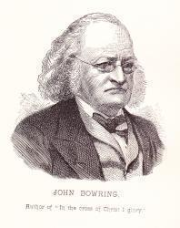
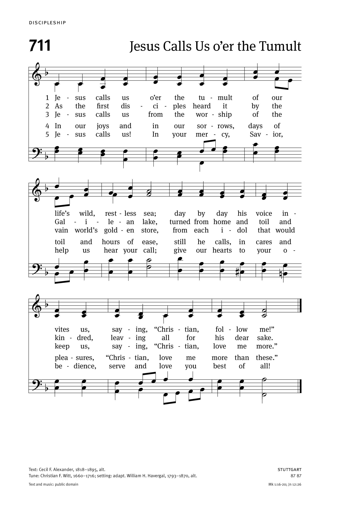
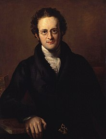
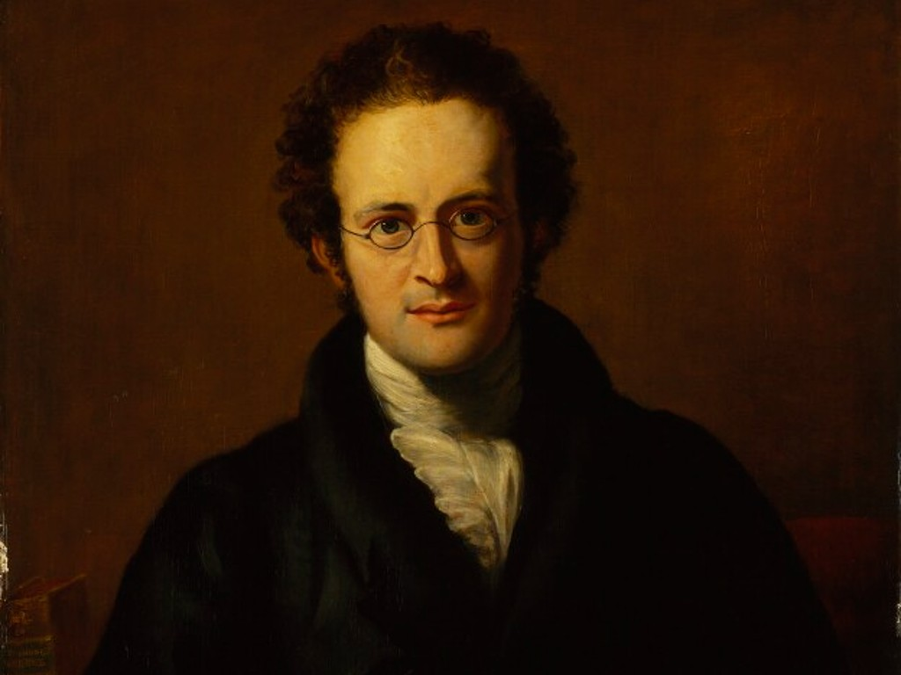
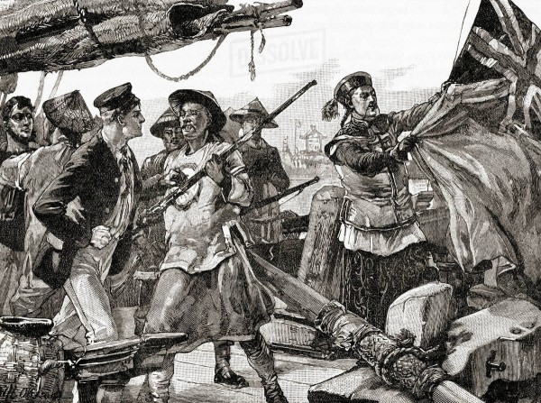

|
|
065神是智慧，神是爱 |
|
1 God is Love; His mercy brightens 2 Chance and change are busy ever; 3 E'en the hour that darkest seemeth 4 He with earthly cares entwineth Amen. |
1.神是爱；衪慈光四布， |
|
God Is Love; His Mercy Brightens
|
|
|
|
|


God Is Love; His Mercy Brightens (Stuttgart) https://youtu.be/H7Dt2VjR-1o -
God Is Love, His Mercy Brightens · Table Singers
https://youtu.be/lMsLt-8NCSA -
God Is Love, His Mercy Brightens - Historic Christian Hymn / Spiritual Song
Lyrics with Orchestral backing music.
https://youtu.be/NDHjHebB2-U
| Text: | God Is Love; His Mercy Brightens |
| Author: | John Bowring, 1792-1872 |
| Short Name: | John Bowring |
| Full Name: | Bowring, John, Sir, 1792-1872 |
| Birth Year: | 1792 |
| Death Year: | 1872 |
James Bowring was born at Exeter, in 1792.

He possessed at an early
age a remarkable power of attaining languages, and acquired some reputation
by his metrical translations of foreign poems. He became editor of "The
Westminster Review" in 1825, and was elected to Parliament in 1835. In 1849,
he was appointed Consul at Canton, and in 1854, was made Governor of Hong
Kong, and received the honour of knighthood. He is the author of some
important works on politics and travel, and is the recipient of several
testimonials from foreign governments and societies. His poems and hymns
have also added to his reputation. His "Matins and Vespers" have passed
through many editions. In religion he is a Unitarian.
--Annotations of the Hymnal, Charles Hutchins, M.A., 1872
Notes
God is love, His mercy brightens. Sir J. Bowring. [The Love of God.] This hymn is sometimes attributed in error to his Matins and Vespers, 1823. It actually appeared in his Hymns in 1825, in 5 stanzas of 4 lines, stanza i. being repeated as stanza v. In 1853 it was given without the repetition of the first stanza, in the Leeds Hymn Book, from whence it passed into numerous collections. Its use in English-speaking countries is very extensive, and it has become one of the most popular of the author's hymns. Original text, Turing's Collection, No. 292, with “the mist," altered to "the gloom," and the omission of the repetition of stanza v. This is the generally accepted form of the hymn.
--John Julian, Dictionary of Hymnology (1907)
| Tune: | STUTTGART |
| Adapter: | William H. Havergal, 1793-1870 |
| Composer: | Christian F. Witt, 1660-1716 |
Tune Information
| Title: | STUTTGART |
| Composer (attributed to): | Christian Friedrich Witt (1715) |
| Place Of Origin: | Gotha |
| Meter: | 8.7.8.7 |
| Incipit: | 55112 23315 56425 |
| Key: | F Major |
| Source: | Psalmodia Sacra Gotha (1715) |
| Copyright: | Public Domain |
Notes
STUTTGART was included in Psalmodia Sacra (1715), one of the most significant hymnals of the early sixteenth century [sic: eighteenth century]. Christian F. Witt (b. Altenburg, Germany, e. 1660; d. Altenburg, 1716) was an editor and compiler of that collection; about 100 (of the 774) tunes in that collection are considered to be composed by him, including STUTTGART, which was set to the text "Sollt' es gleich." Witt was chamber organist and later Kapellmeister at the Gotha court. He composed vocal and instrumental music, including some sixty-five cantatas.
The tune title STUTTGART relates to a story about Rev. C. A. Dann's banishment from his pulpit at St. Leonard's Church in Stuttgart in the early nineteenth century. When Dann was eventually invited back to his church, his congregation greeted him with the singing of "Sollt' es gleich." Henry J. Gauntlett (PHH 104) put the tune into its present isorhythmic (all equal rhythms) form for Hymns Ancient and Modern (1861).
A simple tune of two long lines and a number of repeated tones, STUTTGART has true congregational appeal. This tune has been traditionally used for "Come, Thou Long-Expected Jesus." Sing the hymn in harmony in a broad tempo. Or try singing stanza 3 unaccompanied and in parts, and stanza 4 in unison with alternate harmonization or with the descant (1983) by John Wilson (278). Use clear articulation on the organ with cheerful stops.
--Psalter Hymnal Handbook, 1998

John Bowring 寶寧 1792-1872 Governor of Hong Kong
|
Sir John Bowring
|
|
|---|---|
|

John Bowring in 1826
|
|
| 4th Governor of Hong Kong | |
|
In
office 13 April 1854 – 9 September 1859 |
|
| Monarch | Victoria |
| Lieutenant Governor |
MG William
Jervois MG Robert Garrett MG Thomas Ashburnham MG Charles van Straubenzee |
| Preceded by | Sir George Bonham |
| Succeeded by | Hercules Robinson, 1st Baron Rosmead |
|
Member of Parliament for Bolton |
|
|
In
office 1841–1849 |
|
| Preceded by |
Peter Ainsworth William Bolling |
| Succeeded by |
Stephen Blair Joshua Walmsley |
|
Member of Parliament for Kilmarnock Burghs |
|
|
In
office 1835–1837 |
|
| Preceded by | John Dunlop |
| Succeeded by | John Campbell Colquhoun |
| Personal details | |
| Born |
17 October 1792 Exeter, England |
| Died |
23 November 1872 (aged 80) Claremont, Devon, England |
| Political party | Radical |
| Spouse(s) | |
| Children |
|
| Profession | Member of Parliament (UK) |
|
|
|
Sir John Bowring KCB FRS FRGS (Chinese translated name: 寶寧, 寶靈 (for Mandarin speakers) or 包令 (for Cantonese)) (Thai: พระยาสยามมานุกูลกิจ สยามมิตรมหายศ) (17 October 1792 – 23 November 1872) was an English political economist, traveller, writer, literary translator, polyglot and the fourth Governor of Hong Kong.
Early life[edit]
Bowring was born in Exeter of Charles Bowring (1769–1856[1]: 381 ), a wool merchant whose main market was China,[1]: 596 from an old Unitarian family, and Sarah Jane Anne (d. 1828), the daughter of Thomas Lane, vicar of St Ives, Cornwall.[2] His last formal education was at a Unitarian school in Moretonhampstead and he started work in his father's business at age 13.[2] Bowring at one stage wished to become a Unitarian minister.[3] Espousal of Unitarian faith was illegal in Britain until Bowring had turned 21.[4]: 17
Bowring acquired first experiences in trade as a contract provider to the British army during the Peninsular War in the early 1810s, initially for four years from 1811 as a clerk at Milford & Co. where he began picking up a variety of languages.[1]: 597 His experiences in Spain fed a healthy skepticism towards the administrative capabilities of the British military.[4]: 15 He travelled extensively and was imprisoned in Boulogne-sur-Mer for six weeks in 1822[1]: 597 for suspected spying (though merely carrying papers for the Portuguese envoy to Paris).[4]: 29–30
He incorporated Bowring & Co. with a partner in 1818 to sell herrings to Spain (including Gibraltar by a subsidiary) and France and to buy wine from Spain. It was during this period that he came to know Jeremy Bentham,[4]: 23, 28 and later became his friend. He did not, however, share Bentham's contempt for belles lettres. He was a diligent student of literature and foreign languages, especially those of Eastern Europe. He somehow found time to write 88 hymns during this time, most published between 1823 and 1825.[4]: 43
Failure of his business in 1827, amidst his Greek revolution financing adventure, left him reliant on Bentham's charity and seeking a new, literary direction.[4]: 35–40 Bentham's personal secretary at the time, John Neal, labeled Bowring a "meddling, gossiping, sly, and treacherous man"[5]: 275 and charged him with deceiving investors in his Greek adventure and mismanaging Bentham's funds for Bowring's own prestige with the Westminster Review and an early public gymnasium.[5]: 273–288
Political economist career[edit]
Bowring had begun contributing to the newly founded Westminster Review and had been appointed its editor by Bentham in 1825.[6] By his contributions to the Review he attained considerable repute as a political economist and parliamentary reformer. He advocated in its pages the cause of free trade long before it was popularized by Richard Cobden and John Bright, co-founders of the Anti-Corn Law League in Manchester in 1838.[4]: 46, 66
He pleaded earnestly on behalf of parliamentary reform, Catholic emancipation, and popular education. Bentham failed in an attempt to have Bowring appointed professor of English or History at University College London in 1827 but, after Bowring visited the Netherlands in 1828, the University of Groningen conferred on him the degree of doctor of laws in February the next year for his Sketches of the Language and Literature of Holland.[1]: 598 In 1830, he was in Denmark, preparing for the publication of a collection of Scandinavian poetry.[7] As a member of the 1831 Royal Commission, he advocated strict parliamentary control on public expenditure, and considered the ensuing reform one of his main achievements.[4]: 102 Till 1832, he was Foreign Secretary of the British and Foreign Unitarian Association.
Bowring was appointed Jeremy Bentham's literary executor a week before the latter's 1832 death in his arms, and was charged with the task of preparing a collected edition of his works. The appointment was challenged by a nephew but Bowring prevailed in court.[4]: 41 The work appeared in eleven volumes in 1843,[7] notably omitting Bentham's most controversial works on female sexuality and homosexuality.[4]: 61
Free trade took on the dimensions of faith to Bowring who, in 1841, quipped, "Jesus Christ is free trade and free trade is Jesus Christ", adding, in response to consternation at the proposition, that it was "intimitely associated with religious truth and the exercise of religious principles".[4]: 19
Politician industrialist[edit]
Through Bentham connections and in spite of his radicalism, Bowring was appointed to carry out investigations of the national accounting systems of the Netherlands and France in 1832 by the government and House of Commons, respectively. The mark left by his work in France was not welcomed by all; as one commentator remarked,
Yet his work was so highly regarded by the Whig government that he was then appointed secretary of the Royal Commission on the Public Accounts. He had made his name as something of an expert on government accounting.[4]: 53–55 He stood the same year for the newly created industrial constituency of Blackburn but was unsuccessful.[4]: 59
In 1835, Bowring entered parliament as member for Kilmarnock Burghs;[4]: 63 and in the following year he was appointed head of a government commission to be sent to France to inquire into the actual state of commerce between the two countries. After losing his seat in 1837, he was busied in further economic investigations in Egypt, for which he produced a very extensive report,[8] as well as Syria, Switzerland, Italy, and some of the states in Imperial Germany. The results of these missions appeared in a series of reports laid before the House of Commons and even a paper delivered to the British Association of Science with his observations on containment of the plague in the Levant.[4]: 73, 81 He also spoke out passionately for equal rights for women and the abolition of slavery.[4]: 97–98

On a still narrow, landed constituency, Bowring, campaigning on a radical and, to Marx and Engels, inconsistent platform of free trade and Chartism, secured a seat in parliament in 1841, as member for Bolton, perhaps England's constituency most affected by industrial upheaval and riven by deep social unrest bordering on revolution.[4]: 85 In the House, he campaigned for free trade, adoption of the Charter, repeal of the Corn Laws, improved administration of the Poor Law, open borders, abolition of the death penalty, and an end to flogging in the Army and payments to Church of England prelates.[4]: 88–91
During this busy period he found leisure for literature, and published in 1843 a translation of the Manuscript of the Queen's Court, a collection of Czech medieval poetry,[7] later considered false by Czech poet Václav Hanka. In 1846 he became President of the Mazzinian People's International League.
Without inherited wealth, or salary as MP for Bolton,[10] Bowring sought to sustain his political career by investing heavily in the south Wales iron industry from 1843. Following huge demand for iron rails brought about by parliament's approval of massive railway building from 1844 to 1846,[4]: 112 Bowring led a small group of wealthy London merchants and bankers as Chairman of the Llynvi Iron Company and established a large integrated ironworks at Maesteg in Glamorgan during 1845–46. He installed his brother, Charles, as Resident Director and lost no time in naming the district around his ironworks, Bowrington. He gained a reputation in the Maesteg district as an enlightened employer, one contemporary commenting that 'he gave the poor their rights and carried away their blessing'.[4]: 113
In 1845 he became Chairman of the London and Blackwall Railway, the world's first steam-powered urban passenger railway and the precursor of the whole London Rail system.[4]: 107
_ByEBStephens_Devon&ExeterInstitution.PNG)
Bowring distinguished himself as an advocate of decimal currency. On 27 April 1847, he addressed the House of Commons on the merits of decimalisation.[11] He agreed to a compromise that directly led to the issue of the florin (one-tenth of a pound sterling), introduced as a first step in 1848, by way of pattern coins not issued for circulation, and in 1849 as a circulating coin known as the 'Godless' Florin due to it omitting the words 'DEI GRATIA' in the obverse legend. As the 1849 coins proved unpopular, the coins were redesigned accordingly and went into general production 3 years later in 1852 and became known as 'Gothic Head' Florins remaining in production until 1887.[12] He lost his seat in 1849 but went on to publish a work entitled The Decimal System in Numbers, Coins and Accounts in 1854.[7]
The trade depression of the late 1840s caused the failure of his venture in south Wales in 1848 and wiped out his capital,[4]: 126 forcing Bowring into paid employment. His business failure led directly to his acceptance of Palmerston's offer of the consulship at Canton.
Canton[edit]
By 1847, Bowring had assembled an impressive array of credentials: honorary diplomas from universities in Holland and Italy, fellowships of the Linnaean Society of London and Paris, the Historical Institute of the Scandinavian and Icelandic Societies, the Royal Institute of the Netherlands, the Royal Society of Hungary, the Royal Society of Copenhagen, and of the Frisian and Athenian Societies. Numerous translations and works on foreign languages, politics and economy had been published. His zeal in Parliament and standing as a literary man were well known.[1]: 227
In 1849, he was appointed British consul at Canton (today's Guangzhou), and superintendent of trade in China. Arriving on HMS Medea on 12 April 1849, he took up the post in which he was to remain for four years the next day.[1]: 236 His son John Charles had preceded him to China, arriving in Hong Kong in 1842,[4]: 116 [13] had been appointed Justice of the Peace[1]: 322 and was at one point a partner in Jardines.[6]
Bowring was quickly appalled by endemic corruption and frustrated by finding himself powerless in the face of Chinese breaches of the Treaty of Nanking and refusal to receive him at the diplomatic level or permit him to travel to Peking, and by his being subordinate to the Governor of Hong Kong who knew nothing of his difficulties.[4]: 128–30
For almost a year from 1852 to 1853, he acted as Britain's Plenipotentiary and Superintendent of Trade and Governor of Hong Kong in the absence on leave of Sir George Bonham, who he was later to succeed.[6]
Bowring was instrumental in the formation in 1855 of the Board of Inspectors established under the Qing Customs House, operated by the British to gather statistics on trade on behalf of the Qing government and, later, as the Chinese Imperial Maritime Customs Service, to collect all customs duties, a vital reform which brought an end to the corruption of government officials and led modernisation of China's international trade.[4]: 135–37 Concerned for the welfare of coolies being exported to Australia, California, Cuba and the West Indies, and disturbed by the coolie revolt in Amoy in May 1852, Bowring tightened enforcement of the Passenger Act so as to improve coolie transportation conditions and ensure their voluntariness.[4]: 138–39
Governor of Hong Kong[edit]
The newly knighted Bowring received his appointment as Governor of Hong Kong and her Majesty's Plenipotentiary and Chief Superintendent of British Trade in China on 10 January 1854. He arrived in Hong Kong and was sworn in on 13 April 1854,[1]: 339–40 in the midst of the Taiping Rebellion occupying the attentions of his primary protagonists and the Crimean War distracting his masters.[4]: 143–46 He was appointed over strong objections from opponents in London. Fellow Unitarian Harriet Martineau[14] had warned that Bowring was "no fit representative of Government, and no safe guardian of British interests", that he was dangerous and would lead Britain into war with China, and that he should be recalled. Her pleas went unheeded.[15]
Bowring was an extremely industrious reformist governor. He allowed the Chinese citizens in Hong Kong to serve as jurors in trials and become lawyers. He is credited with establishing Hong Kong's first commercial public water supply system. He developed the eastern Wan Chai area at a river mouth near Happy Valley and Victoria Harbour by elongating the river as a canal, the area being named Bowring City (Bowrington). By instituting the Buildings and Nuisances Ordinance, No. 8 of 1856, in the face of stiff opposition,[1]: 398 Bowring ensured the safer design of all future construction projects in the colony. He sought to abolish monopolies.[6]
Bowring was impressed by the yawning gulf of misunderstanding between the expatriate and Chinese communities, writing, "We rule them in ignorance and they submit in blindness."[4]: 170 Notwithstanding, in 1856, Bowring went so far as to attempt democratic reform. He proposed that the constitution of the Legislative Council be changed to increase membership to 13 members, of whom five be elected by landowners enjoying rents exceeding 10 pounds, but this was rejected by Henry Labouchère of the Colonial Office on the basis that Chinese residents were "deficient in the essential elements of morality on which social order rests". The constituency would only have amounted to 141 qualified electors, in any event.[4]: 164
He was equally impressed by the dearth of expenditure on education, noting that 70 times more was provided for policing than for instruction of the populace, so he rapidly brought in an inspectorate of schools, training for teachers and opening of schools. Student number increased nearly ten-fold.[4]: 173
He became embroiled in numerous conflicts and disputes, not least of which was a struggle for dominance with Lieutenant Governor William Caine, which went all the way back to the Colonial Office for resolution. He won.[6] He was faulted for failing to prevent a scandalous action in slander, in 1856, by the assistant magistrate W. H. Mitchell against his attorney-general T. Chisholm Anstey over what was essentially a misapprehension of fact but which was thought "unique in all the scandals of modern government of the Colonies or of English Course of Justice".[1]: 405
A Qing-sponsored campaign of civil disruption, threatening the very survival of the British administration, culminated in the arsenic poisoning incident of 15 January 1857 in which 10 pounds of arsenic was mixed in the flour of the colony's principal bakery, poisoning many hundreds, killing Bowring's wife and debilitating him for at least a year.[16] This was a turning point for Bowring who, cornered, all but abandoned his liberality in favour of sharply curtailed civil liberties. He bemoaned:
Diplomacy[edit]
In 1855, Bowring experienced a reception in Siam that could not have stood in starker contrast to Peking's constant intransigence. He was welcomed like foreign royalty, showered with pomp (including a 21-gun salute), and his determination to forge a trade accord was met with the open-minded and intelligent interest of King Mongkut.[4]: 192 [6]: 43 Negotiations were buoyed by the cordiality between Mongkut and Bowring and an agreement was reached on 17 April 1855,[4]: 194 now commonly referred to as the Bowring Treaty. Bowring held Mongkut in high regard and that the feeling was mutual and enduring was confirmed by his 1867 appointment as Siam's ambassador to the courts of Europe. Bowring's delight in this "remarkable" monarch has been seen by at least one commentator as a possible encouragement to his frustration with Peking and rash handling of the Arrow affair.[4]: 197
War and late career[edit]
In October 1856, a dispute broke out with the Canton vice-consul Ye Mingchen over the Chinese crew of a small British-flagged trading vessel, the Arrow. Bowring saw the argument as an opportunity to wring from the Chinese the free access to Canton which had been promised in the Treaty of Nanking but so far denied. The irritation caused by his "spirited" or high-handed policy led to the Second Opium War (1856–1860).[7] Martineau put the war down to the "incompetence and self-seeking rashness of one vain man".[15]: 173–74
It was under Bowring that the colony's first ever bilingual English-Chinese law, "An Ordinance for licensing and regulating the sale of prepared opium" (Ordinance No. 2 of 1858), appeared on its statute books.[1]: 467
In April the same year, Bowring was the subject of scandal when the case of criminal libel against the editor of the Daily Press, Yorick J Murrow, came to trial. Murrow had written of Bowring's having taken numerous steps to favour the trade of his son's firm, Messrs Jardine, Matheson & Co., enriching it as a result. Murrow, having been found guilty by the jury, emerged from six months' imprisonment to take up precisely where he left off, vilifying Bowring from his press.[1]: 469–70 The scandal was rekindled in December when Murrow brought an ultimately unsuccessful suit in damages against Bowring in connection with his imprisonment.[1]: 568–69
A commission of inquiry into accusations of corruption, operating brothels and associating with leading underworld figures laid by Attorney-General Anstey against Registrar-General Daniel R Caldwell scandalised the administration. During the course of its proceedings Anstey had opportunity to viciously accuse William Thomas Bridges, one-time acting Attorney-General and constant favourite of Bowring, for receiving stolen goods under the guise of running a money-lending operation from the ground floor of his residence, collecting debts at extortionate rates. The charges found unproved, Caldwell was exonerated and Anstey suspended, and Bridges later to be appointed acting Colonial Secretary by Bowring, but suspicions remained and Bowring's administration had been ruined.[1]: 502–36
In mourning for the recent loss of his wife to the arsenic poisoning, Bowring made an official tour of the Philippines, sailing on the steam-powered paddle frigate Magicienne[17]: 5 on 29 November 1858, returning seven weeks later.[1]: 564
Stripped of his diplomatic and trade powers,[1]: 594–95 weakened by the effects of the arsenic, and seeing his administration torn apart by anti-corruption inquiries in a campaign launched by him, Bowring's work in Hong Kong ended in May 1859.[6]: 43–44 His parting sentiment was that "a year of great embarrassment ... unhappy misunderstandings among officials, fomented by passionate partisanship and by a reckless and slanderous press, made the conduct of public affairs one of extreme difficulty."[4]: 183 He plunged into writing a 434-page account of his Philippines sojourn which was published the same year.[17]
His last employment by the British government was as a commissioner to Italy in 1861, to report on British commercial relations with the new kingdom. Bowring subsequently accepted the appointment of minister plenipotentiary and envoy extraordinary from the Hawaiian government to the courts of Europe, and in this capacity negotiated treaties with Belgium, the Netherlands, Italy, Spain and Switzerland.[7]
Linguist and author[edit]
Bowring was an accomplished polyglot and claimed he knew 200 languages of which he could speak 100.[18] Many of his contemporaries and subsequent biographers thought otherwise.[4]: 50–52 [note 1] His chief literary work was the translation of the folk-songs of most European nations, although he also wrote original poems and hymns, and books or pamphlets on political and economic subjects.[18] The first fruits of his study of foreign literature appeared in Specimens of the Russian Poets (1821–1823). These were followed by Batavian Anthology (1824), Ancient Poetry and Romances of Spain (1824), Specimens of the Polish Poets, and Serbian Popular Poetry, both in 1827,[7] and Poetry of the Magyars (1830).
Bowring's 88 published hymns include "God is love: his mercy brightens", "In the Cross of Christ I glory", and "Watchman, tell us of the night".[19] "In the Cross" and "Watchman", both from his privately published collection Hymns (1825), are still used in many churches. The American composer Charles Ives used part of Watchman, Tell Us of the Night in the opening movement of his Fourth Symphony.
Selected publications:
- Specimens of the Russian Poets (1821–1823)
- Peter Schlemihl, translated from German (1824)
- Batavian Anthology; or, Specimens of the Dutch Poets (1824)
- Ancient Poetry and Romances of Spain (1824)
- Hymns (privately published, 1825)
- Matins and Vespers with Hymns and Occasional Devotional Pieces (1827)[4]: 44
- Specimens of the Polish Poets (1827)
- Serbian Popular Poetry (1827)
- Poetry of the Magyars (1830)
- Cheskian Anthology (1832)
- Bentham's Deontology, edited (1834) vol. 1, vol. 2
- Minor Morals for Young People (1834)
- Manuscript of the Queen's Court (1843)
- The Decimal System in Numbers, Coins and Accounts (1854)
- The Kingdom and People of Siam (1857), with foreword by King Mongkut [1]
- A Visit to the Philippine Islands (1859) [2]
- Translations from Alexander Petőfi (1866) [3]
Personal life[edit]
Bowring married twice. By his first wife, Maria (1793/94–1858), whom he married in 1818 after moving to London, he had five sons and four daughters (Maria, John, Frederick, Lewin, Edgar, Charles, Edith, Emily, and Gertrude). She died in September 1858, a victim of the arsenic poisoning of the bread supply in Hong Kong[1]: 471 during the Second Opium War sparked by her husband.[2][6]
- His son John Charles was a keen amateur entomologist, ultimately amassing a collection of some 230,000 specimens of coleoptera which he donated to the British Museum in 1866.[20]
- His fourth son, Edgar Alfred Bowring, was a Member of Parliament for Exeter from 1868 to 1874. E. A. Bowring is also known as an able translator in the literary circles of the time.
- Lewin Bentham Bowring was a member of the Bengal Civil Service. He served as private secretary in India to Lord Canning and Lord Elgin,[21] and later as commissioner of Mysore.
- His daughter, Emily, became a Roman Catholic nun and was known as Sister Emily Aloysia Bowring. She was the first headmistress of the Italian Convent School (now known as the Sacred Heart Canossian College) in Hong Kong, serving from 1860 until her death in 1870.[1]: 596
Bowring married his second wife, Deborah Castle (1816–1902), in 1860; they had no children. Deborah, Lady Bowring died in Exeter in July 1902.[22] She was a prominent Unitarian Christian and supporter of the women's suffrage movement.[23]
John Bowring died on 23 November 1872, aged 80.[4]: 216
Honours[edit]
- Knight Commander of the Order of the Bath (KCB), 1854
- Knight Grand Cross of the Royal Order of Kamehameha I of the Kingdom of Hawaii, 1857.[24]
- Fellow, Royal Society and Royal Geographical Society
- Phraya Siamanukulkij Siammitrmahayot (Honorary Lord Royal Fellow of Siam: พระยาสยามานุกูลกิจ สยามิตรมหายศ)
- Elected a member of the American Antiquarian Society in 1834.[25]
Legacy[edit]

{kind=link}
{kind=link}
{kind=link}
{kind=link}
Bowring is credited with popularising Samuel Taylor Coleridge's Kubla Khan or a Vision in a Dream which had been disparaged by the critics and discarded soon after first publication.[4]: 47–48
In the mid-19th century a district of the Llynfi Valley, Glamorgan, south Wales was known as Bowrington as it was built up when John Bowring was chairman of the local iron company. Bowring's ironworks community later became part of the Maesteg Urban District. The name was revived in the 1980s when a shopping development in Maesteg was called the Bowrington Arcade.
Bowring Road, Ramsey, Isle of Man, was named for him in appreciation of his support of universal suffrage for the House of Keys and his efforts to liberalise trade with the island.[4]: 92–93
As the 4th Governor, several places in Hong Kong came to be named after him:[4]: 173
- Bowring Praya West and Bowring Praya Central were two roads built on reclaimed land during his tenure, but were respectively renamed Des Voeux Road West and Des Voeux Road Central in 1890 after the Praya Reclamation Scheme.
- Bowrington, or Bowring City, is an area Bowring originally built around the estuary of the Wong Nai Chung river, and is the site of the Bowrington Market. He built an extension named the Bowrington Canal, over which the original Bowrington Road (now called Canal Road) and the Bowrington Bridge passed.[4]: 173 A road running parallel to and one block to the west of Canal Road retains the name Bowrington Road and houses the street market which serves the district.
- Bowring Street in the district of Jordan, Hong Kong
He was also responsible for the establishment of the Botanic Gardens in Hong Kong, the most indelible mark he made on the colony.[4]: 173
Two species of lizards, Hemidactylus bowringii and Subdoluseps bowringii, are named in honour of either John Bowring or his son John Charles Bowring.[26]
Bowring was the founder of Hastings Unitarian Church in Hastings, East Sussex, which was built between 1867 and 1868.[27]
Actress Susannah York was the great-great-granddaughter of Bowring.[28]
Distant cousin Philip Bowring[edit]
Journalist and historian Philip Bowring is a descendant of Bowring's great uncle Nathaniel.[29] He is a crucial source here, as author of less-than-whole-life biography Free Trade's First Missionary.[4]
Notes[edit]
- ^ Philip Bowring's 2014 observation (p. 50) responds to a version of this biography: 'The claim to fluency in dozens of languages was exaggerated, yet it has survived in some accounts today: Wikipedia describes him as "ranked ... among the world's greatest hyperglots—his talent enabling him at last to say that he knew 200 languages, and could speak 100".[note] Many of his contemporaries took the claims with a pinch of salt. Bowring's linguistic abilities became the butt of jokes in some quarters, not only among his enemies.'
https://en.wikipedia.org/wiki/John_Bowring
語言學家港督：寶寧
文化生活, 歷史, 殖民, 港督, 英殖, 英殖時期, 語言學家, 香港 2022年5月6日 BY BILLY TONG A+A- 寶寧肖像（局部）。
圖片來源：National Portrait Gallery, London 在

19 世紀開埠初期，香港已經發展成為一個華洋雜處的國際港口，不單止有廣東華人、英國白人，還有葡國人、巴斯人、猶太人、印度人等族群聚居，行政首長要跟各界打好關係，需要具備優秀的語文能力。香港曾經出過戴維斯和金文泰等數任漢學家港督，但達到語言學家級數的，或許只有一個，就是號稱懂得 200 種語言的香港第四任港督寶寧（Sir John Bowring，又譯寶靈、包令）。
1792 年，寶寧於英國西南部德文郡（Devon）一個經營羊毛生意的家庭出生。他 13 歲時就在父親的羊毛公司做文員，後來到當地一間公司的會計房打工。這兩份工作都需要接觸很多外地商人，因此他能熟習不同語言。1811 年寶寧到倫敦工作，第一次得到前往西班牙公幹的機會，當時他已經能操流利西班牙文。他往後周遊歐洲列國，如法國、葡萄牙、德國、俄羅斯和斯堪的納維亞半島，旅途中精進各國語文。
1820 年，他出版第一本著作「俄國詩人式樣」（Specimens of the Russian Poets），並在同年遇上英國哲學家邊沁（Jeremy Bentham）。接著短短 10 年之內，他出版至少 8 本翻譯著作，包括德文、荷文、西班牙文、波蘭文和匈牙利文的文學作品，又撰寫了兩本自己創作的詩歌集；1829 年他獲格羅寧根大學授予法學博士學位。他也在這段時期開始踏足政界，1824 年在邊沁創立的「西敏評論」（Westminster Review）擔當政治版主編，慢慢成為知名的政治經濟評論家。
到 19 世紀 30、40 年代，寶寧透過邊沁的人脈打入英國建制，多次參與官方委員會；1832 年邊沁逝世，寶寧又繼承了其著作的出版權，因而獲得鉅額收入。他先後成為代表基爾馬諾克和博爾頓選區的下議院議員，總計歷時 12 年。在議會時，他被視為激進派一員，支持工人主導的「憲章運動」（Chartism），爭取 21 歲或以上的男子都享有普選權，同時聲援各地廢奴主義運動；而在經濟層面，他則支持自由貿易和市場經濟。
1849 年，寶寧的命運與香港開始交織，並完全改寫這個東方港口的發展軌跡。在 40 年代末，他在威爾斯的工廠投資完全失敗，賠光前半生的積蓄。這時候，外交大臣巴麥尊勳爵（Viscount Palmerston）邀請他到廣州出任英國駐華公使一職，年薪 1,800 鎊，當時他已經年屆 57。到 1854 年，他再上一層樓，獲委任為香港總督兼英國駐華商務總監，接替文咸爵士（Sir George Bonham）。而在此之前，文咸已因為身體抱恙而經常休假，由寶寧在港代辦商務總監職務。 英國殖民史學家韋爾許（Frank Welsh）在著作「香港史」（A History of Hong Kong）指出，輝格黨（whigs）重返執政地位，令到寶寧贏得任命機會。寶寧當時已在歐洲享負盛名，不過同時招惹不少敵人，社會家馬提紐（Harriet Martineau）形容他滿口謊言，喜歡自吹自擂，不會為英國利益辦事。韋爾許評價指，前兩任港督戴維斯和文咸都喜惡分明，而且反映在其管治風格之中，但兩人夾在倫敦白廳和殖民地居民之間，個人影響力十分有限，寶寧卻是真正為香港帶來關鍵改變。 畫家描繪的亞羅號事件。

圖片來源：Wikimedia Commons
寶寧任內發生了兩件大事件。
第一宗是「亞羅號事件」（Arrow Incident），1856 年 10 月 8 日，清朝水師在商船亞羅號進行搜查，拘捕船上 12 名涉嫌走私的中國水手，並撕下船上的英國國旗（船長為愛爾蘭人）。寶寧極力爭取以此為藉口開戰，一口氣解決過去懸而不決的廣州入城問題，並向兩廣總督葉名琛發照會：「如不速為彌補，自飭本國水師，將和約缺陷補足。」葉名琛拒絕賠償和道歉，最終寶寧勒令英軍入侵珠江口，炮轟總督衙門，打開第二次鴉片戰爭序幕。
寶寧的舉動在國內掀起極大爭議。保守黨人和反戰主義者批評寶寧以小反大，開展了一場不公義戰爭。而在香港，華人社會當然也有不滿。1857 年 1 月 15 日，戰爭期間，發生了另一大事「裕成辦館毒麵包案」，數百名居港洋人砷中毒，後來發現裕成辦館的麵包含大量砒霜。當時有憤怒的洋人要求抓捕所有華人居民，又有人要求把疑兇送上軍事法庭。寶寧一方面宣佈華人社區戒嚴，同時堅持案件交由陪審團裁定，最終辦館老闆張霈霖被判無罪，震驚居港洋人社群。
第二次鴉片戰爭的結果是滿清慘敗，被迫簽下「北京條約」，其中一條是割讓九龍半島予英國，改變了香港的命運。除此之外，寶寧還進行一些社會改革，韋爾許形容他是一位「堅定的民主派和改革者」（a convinced democrats and reformer），希望帶領香港走進一個更自由的社會。他任內容許華人出任陪審員和律師，甚至建議增設 3 名非官守立法會議員，由香港居民不分種族投票普選產生，這個激進建議當然被推翻。 寶寧任內也有一些民生建設，今天鵝頸一帶，當年叫作「寶寧城」（Bowrington），正是由他力主造地興建。他同時極力改善水利，開通「寶靈頓運河」，紓緩黃泥涌洪水問題，又建立商用的公共供水體系。另外，他不顧商家反對，引入「1856 年建築物和滋擾條例」（Buildings and Nuisances Ordinance, No. 8 of 1856），要求確保街頭通風整潔，又要加入水廁。
作為學者，他又積極辦學，任內香港學生數目大增 10 倍。 不過，寶寧激進的性格和方案，令他與殖民地部，乃至港英內部的官員都不和，例如曾經與被喻為大貪官的副總督威廉堅（William Caine）爭權。1858 年，寶寧夫人因為砷中毒後遺症逝世，令他深受打擊，而他自己中毒後身體也不如從前；任內的打貪活動又使港英政府四分五裂。
在 1859 年，寶寧卸下港督一職。他回國後繼續學術生涯，把自己在遠東的見聞輯錄成書，例如在 1868 年翻譯清代名著「花箋記」（The Flowery
Scroll），至今仍為學者所研究。 1872 年，寶寧在家鄉病逝。至於到底他懂得多少語言，他的傳記作家都認為 100 種是誇大了，但他至少可以流利講 8
種，另加書寫 7 種，同時另外熟知 25 種。毫無疑問，寶寧是歷代港督中，語言天分最為超卓的一位。
原文網址： https://www.cup.com.hk/2022/05/06/sir-john-bowring/ | *CUP媒體